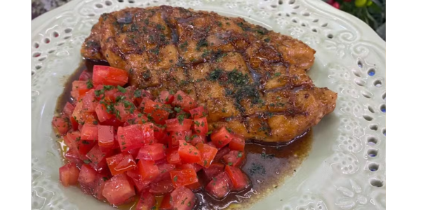

RECEITA - PEITO DE FRANGO PRÁTICO
INGREDIENTES
- 1 peito de frango desossado com 2,5 cm de altura (+/- 400 g)
- Sal e pimenta-do-reino moída a gosto
- ¼ de xícara (chá) de farinha de trigo (40 g)
- 4 colheres (sopa) de manteiga (50 g)
- 1 colher (sopa) de alho picado frito (5 g)
- 1 colher (sopa) de shoyu (15 g)
- 4 colheres (sopa) de mel (80 g)
- 2 colheres (sopa) de vinagre branco (30 g)
- Salsinha picada a gosto para finalizar
MODO DE PREPARO
- Com uma faca afiada, corte o peito de frango ao meio, separando-o em 2 partes iguais.
- Faça cortes superficiais (com +/- 1 cm de distância e de profundidade) em um dos lados, formando um xadrez.
- Tempere com sal e pimenta-do-reino moída a gosto e depois empane os 2 lados do peito em ¼ de xícara (chá) de farinha de trigo. Reserve.
- Aqueça uma frigideira em fogo médio e derreta 4 colheres (sopa) de manteiga.
- Doure os peitos por +/- 2 minutos de cada lado (se for mais alto, deixe por mais tempo).
- Adicione 1 colher (sopa) de alho picado frito, 1 colher (sopa) de shoyu, 4 colheres (sopa) de mel, 2 colheres (sopa) de vinagre branco e misture bem.
- Cozinhe por +/- 1 minuto e, fora do fogo, salpique salsinha picada e sirva com salada de tomate.
Voltar